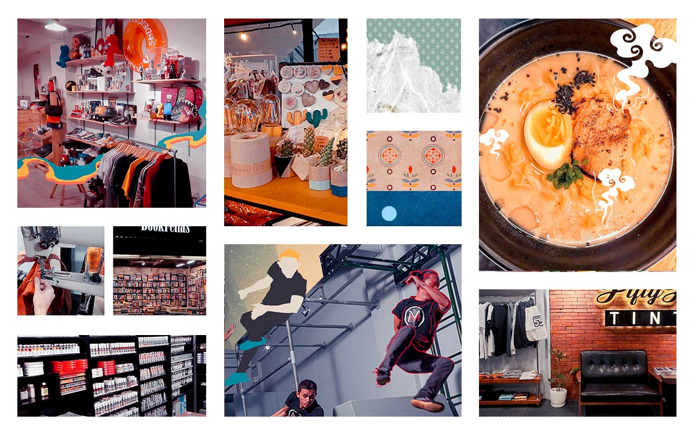

Maginhawa Street
Diliman, Quezon City, Philippines

Diliman, Quezon City, Philippines
When it comes to food streets, Quezon City locals would instantly think of Maginhawa, and for a good reason. It is one of the locations that paved the way for the food street scene in Quezon City. What started as a hangout spot for university students now has everything for everyone.
The history of the food park began in the late 2000s. In 2007, Banchetto opened to cater to the growing number of workers in the business process outsourcing (BPO) industry in the Ortigas central business district. Claiming to be the first “overnight street food fiesta”, the park opened late at night every Friday and lasted until Saturday morning.
Friuli Trattoria: Neighborhood pizza joint that serves really great pizzas, pasta dishes and desserts. They deliver to our area, so this is our pizza of choice when we have friends over. Hands down, the best place for pizza.
Roberta Flavors of Asia: Homey and pleasant resto that serves Asian fusion dishes. The menu has an interesting mix of Chinese, Filipino, Japanese, Korean and Thai cuisine with a twist. Seafood, vegan and vegetarian options are also available.
Caution Hot! Spicy Noodle House: A noodle house that specializes in spicy Chinese noodles. You can customize different elements of your order. Servings are pretty generous and they don’t scrimp on the toppings. Best ramen / noodles in the area
Griddle: Steak x Wings: A travel-themed cafe that serves really good steaks and chicken wings. This has my current vote as the best-tasting value for money steak in the area. Their generous-sized steak comes with rice and sides (mashed potatoes and corn and carrots).
Pino Resto Bar / Pipino Vegan: One of the original restaurants along Maginhawa, Pino Resto Bar serves a creative take on Filipino comfort food. The owners behind Pino also manage other food concepts like Pi Breakfast and Pies (all-day breakfast), Pipino (Vegan / Vegetarian), Burger Project (burgers) and Malingap Central Food Hall right across the street.